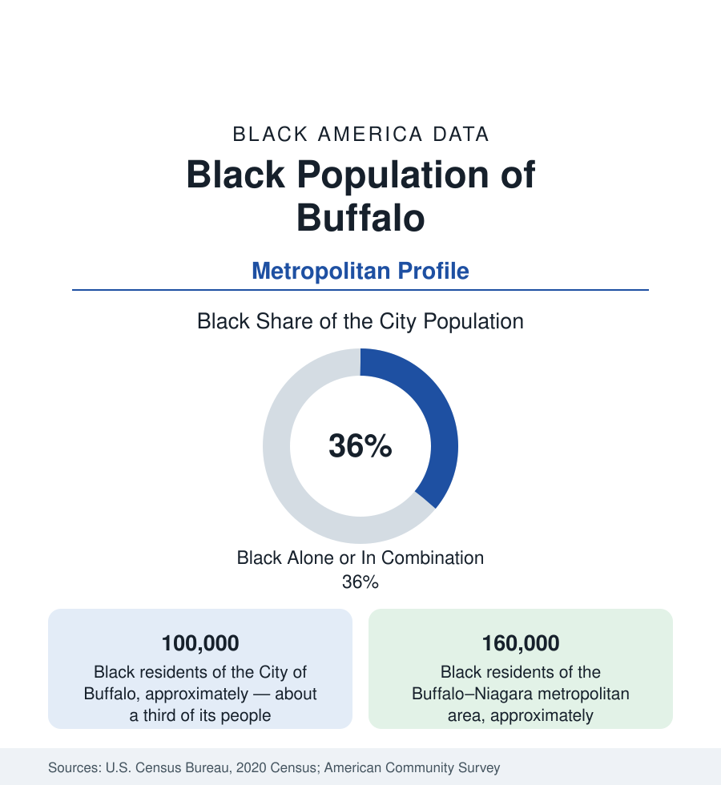

Black Cities
Black Buffalo: The East Side, the Fruit Belt, and a Hard Century
Buffalo holds about 100,000 Black residents in the city — a third of its population — and 160,000 across the metro. The census profile.

Buffalo holds about 100,000 Black residents within the city — Black alone or in combination, roughly a third of its 278,000 people, one of the highest shares of any Northern legacy city — and about 160,000 across the metropolitan area. Black Buffalo's geography is the East Side, a vast district that is at once one of America's most concentrated Black urban landscapes and one of its most disinvested, in a metro whose suburbs (Cheektowaga, Amherst) hold the region's growth. The profile carries a hard century's data — underground railroad terminus, Great Migration steel-and-rail town, deindustrialization epicenter — in current tables.
The East Side and the Fruit Belt
The community's map has been stable for a century. The East Side — the broad district east of Main Street, from the Fruit Belt (the small, oldest Black district, named for its orchard streets, adjoining the medical campus) through Broadway-Fillmore, Masten Park, Hamlin Park (the professional district of the mid-century), Cold Springs, and out to Bailey Avenue and the city line — holds the overwhelming majority of Black Buffalo in contiguous neighborhoods of one- and two-family houses, commercial strips (Broadway, Fillmore, Jefferson Avenue) in every stage from historic to hollowed, and the city's Black institutional layer: its senior churches, the Colored Musicians Club (a landmark of American jazz labor history, a museum today), the Michigan Street Baptist Church (an Underground Railroad station, preserved), and Canisius and Medaille's urban campuses at its edges. The Kensington Expressway's cut through Humboldt Parkway — Olmsted's tree-lined boulevard converted to a sunken highway in the 1960s — is the district's canonical wound, and the state's current project to deck and restore it is the region's largest single equity investment in a generation, its design process documented as carefully as its history.
The Economy After the Mills
Black Buffalo's employment history runs from the lake-and-rail economy (the port, the stockyards, Bethlehem Steel's Lackawanna works just south) through the collapse that defines the modern data: the metro lost its industrial base in a generation, and the East Side's indicators — among the lowest household incomes of any large-city district in the Northeast in the ACS tract data — carry the weight. The current employers follow the replacement economy: the Buffalo Niagara Medical Campus (the Fruit Belt's edge, its expansion the district's live gentrification file), the university system (UB, Buffalo State), the public sector, the Seneca Nation's casino economy, logistics on the old industrial land, and the cross-border trade of the Peace Bridge. Black homeownership on the East Side is the rooted asset — a majority of the district's houses are owner-occupied in many tracts, at values the appraisal data price at the region's floor — and the weatherization and repair backlog of a century-old, lake-effect housing stock in a poor district is the housing file's substance.
Composition and the New Arrivals
The city's Black composition is layered unusually: the Southern-rooted Great Migration base; one of the Northeast's significant African refugee communities (Somali, Congolese, Sudanese, and Burundian resettlement concentrated on the West Side and spilling east — Buffalo is a major resettlement city whose immigrant data transform several districts), a growing Caribbean layer, and the Puerto Rican community of the Lower West Side adjoining. The school data register the layering — Buffalo Public Schools is among New York's most diverse districts, its Black share around half of enrollment with dozens of home languages. Niagara Falls, the metro's second city, holds its own older Black community in the chemical-and-power town's districts; Lockport and Lackawanna add small historic layers.
Change and the Estimates
The metro's Black growth is suburban and slow: Cheektowaga and Amherst gain, the city holds roughly level (the recent censuses show Buffalo's overall population growing for the first time since 1950, with its Black population stable), and the Kensington restoration and medical-campus files frame the East Side's contested future — whether investment reaches the legacy residents or reprices them out, the question every city in this section now files. The estimates' youth data and the district's institutional survival (its churches and clubs are among the most intact in the Rust Belt) suggest the community's center holds while its form negotiates.
Reading the Buffalo Numbers
Buffalo is the Rust Belt profile at maximum concentration: a third of a city, one district, a century of history from the Underground Railroad to the expressway cut, priced at the region's floor and argued over in its largest restoration project. Its 100,000 Black residents live in the most legible Black urban geography in the Northeast — the East Side is not a neighborhood in the data; it is the datum.
More in Black Cities
Black Atlanta: Population, Distribution, and Growth of a Black Metropolis
Metro Atlanta holds more than two million Black residents — roughly one in three, second only to New York. The suburban distribution, migration history, and composition of Black Atlanta in the census data.
Black New York: The Largest Black Population in America
The New York metropolitan area holds about 3.4 million Black residents — more than any metro in the nation — and the city itself about two million. The census profile.
Black Washington: The District and the Metro
The Washington metro holds about 1.6 million Black residents, and the District itself — long a majority-Black city — now records a Black share near 41 percent. The census profile.
Source: U.S. Census Bureau, 2020 Census; American Community Survey; Population Estimates Program.